Keine Aufnahme an dieser Stelle

Video von Blue Tacit prüfen: „Schnittversion prüfen“ antippen und das Video und die gleichnamige .json-Datei zusammen auswählen.
Projekt importieren: im Projektordner alle Dateien auswählen (projekt.json, Videos, Filmstreifen). Erneut importieren ergänzt fehlende Dateien, deine Auswahl bleibt. Speicherdatei öffnen: öffnet das passende Projekt mit dem gespeicherten Stand.